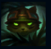
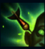
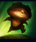
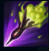
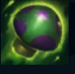

Teemo
| Teemo The Swift Scout | |
|---|---|
| Release date | 21.02.2009 |
| Class | Specialist |
| Positions | Top |
| Resource | Mana |
| Range type | Ranged |
| Adaptive type | Magic |
| Base statistics | |||
| Health | 528 – 2058 | Mana | 334 – 674 |
| Health regen. | 5.5 – 16.55 |
Mana regen. | 9.6 – 17.25 |
| Armor | 24 – 87.75 | Attack damage | 54 – 105 |
| Magic resist. | 30 – 38.5 | Crit. damage | 175% |
| Move. speed | 330 | Attack range | 500 |
Teemo explorează lumea cu un entuziasm incurabil și o veselie debordantă, iar nici cele mai periculoase obstacole nu-l pot întoarce din drum. Fiind un yordle cu un simț al moralității extrem de ferm, respectă cu mândrie Codul Cercetașilor din Bandle, fără să-și dea seama mereu de consecințele acțiunilor sale. Deși unii pun la îndoială existența cercetașilor, un lucru este sigur: perseverența lui Teemo nu e ceva de luat în glumă. |  |
TACTICI DE GHERILĂ Dacă Teemo stă nemișcat și nu face nicio acțiune pentru un scurt timp, devine invizibil pe termen nedefinit. Cât timp se află în tufișuri, poate deveni și rămâne invizibil chiar dacă se mișcă. După ce devine vizibil, Teemo câștigă ''Elementul surpriză'', care-i dă un bonus la viteza de atac timp de 3 secunde. |
||
|---|---|---|---|---|
 |
SĂGEATĂ ORBITOARE Aplică un venin puternic, provocând daune unității inamice țintă și orbind-o pe întreaga durată a efectului. |
|||
 |
ȚOPĂIALĂ Teemo țopăie de jur împrejur, mărindu-și în mod pasiv viteza de mișcare până e lovit de un campion inamic sau de un turn. Teemo poate sprinta, câștigând viteză de mișcare bonus pentru scurt timp; aceasta nu va fi anulată dacă e lovit. |
|||
|  |
LOVITURĂ TOXICĂ Fiecare atac al lui Teemo otrăvește ținta, provocând daune la impact și apoi la fiecare secundă timp de 4 secunde. |
|||
 |
CAPCANĂ OTRĂVITOARE Teemo aruncă o capcană otrăvitoare, folosind una dintre ciupercile pe care le are în rucsac. Atunci când un inamic calcă pe o capcană, aceasta degajează un nor otrăvitor care încetinește inamicii și le provoacă daune în timp. Dacă Teemo aruncă o ciupercă peste altă ciupercă, aceasta ricoșează și căpătă o rază de acțiune mai mare. |